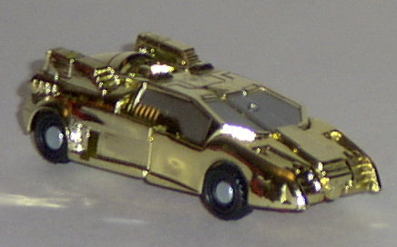
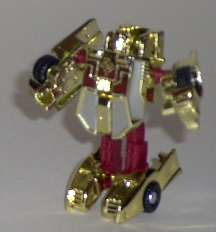
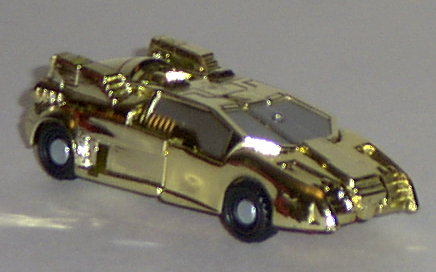
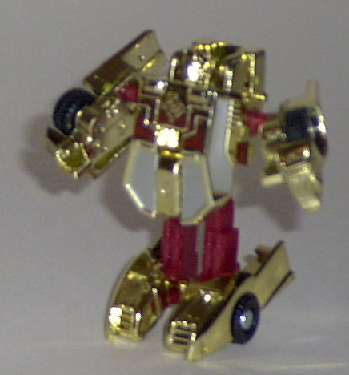
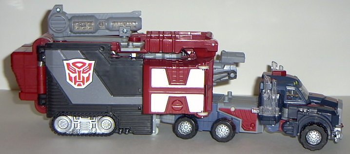
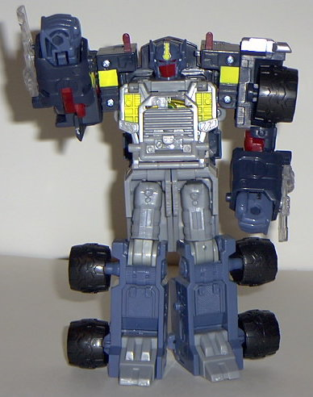
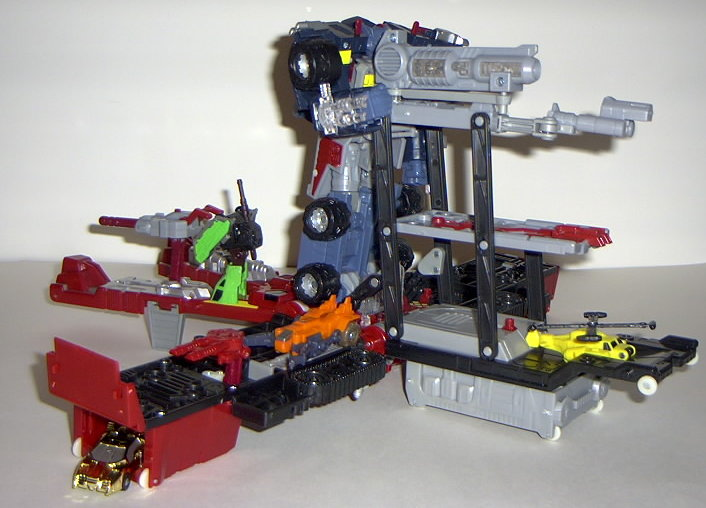
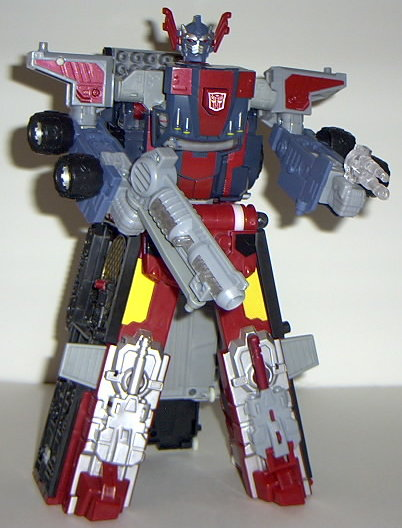

Corona
Sparkplug
Corona
Sparkplug
 
Allegiance : Minicon
Size : Mini-Con
Difficulty of Transformation : Easy
Color Scheme : Chrome gold, dark red, and some black and silver
Rating : 7.1
(NOTE: Because this set is a repaint, this is not a full-blown review. This mainly covers any changes made to the set and the color scheme, and merely compares it to the original Armada Prime w/ Sparkplug. For a review on the mold itself, read the review of Armada Optimus Prime w/ Sparkplug here .)
Corona
Sparkplug


Allegiance
: Minicon
Size
: Mini-Con
Difficulty of Transformation
: Easy
Color Scheme
: Chrome gold, dark
red, and some black and silver
Rating
: 7.1
Unlike Powerlinx Prime,
Corona Sparkplug has been remolded quite a bit from his previous incarnation,
as a little extra incentive to get you to purchase a repaint of a $40 toy.
Instead of just a regular sportscar, now he's a souped-up futuristic sportscar
with a rocket engine- and about 80% of his parts have been remolded to
reflect this upgrade. Nifty. Oh, yeah, and he's almost completely covered
in gold chrome, which looks so freakin' lovely. It's like his vehicle mode
is the pimpmobile or something. He has even less paint detailing than his
previous version- his windows are silver, and that's it- but with all that
chrome gold, he doesn't really need it. In robot mode he also has some
dark red plastic thrown in, just for variety. For those of you who are
worrying about chrome cracking issues, don't- I've had mine for quite some
time now and have transformed him back and forth many times and have yet
to see any crackage- and I've heard of only one or two cases where it has.
It's all good.
Corona Sparkplug is
a great improvement over the original "blah" Sparkplug, although his robot
mode still looks a bit weird. That gold chrome is wonderful.
 Optimus
Prime (Powerlinx)
Optimus
Prime (Powerlinx)


Allegiance
: Autobot
Size
: Super Base ($40 U.S.)
Difficulty of Transformation
: Hard
Color Scheme
: Dark flat blue, light
milky flat blue, dark red, black, light gray, silver, and some clear plastic,
bright yellow, aquamarine, and gold
Powerlinx ports
: 13 (2 gimmicked)
Rating
: 7.3
Powerlinx Optimus Prime
is an improvement over his previous versions in all of his modes except
one. His red, black, silver, gray, and blue mix very, very well throughout
his entire chasis in truck mode. Those red stripes across the upper portion
of the cab are especially delicious. Likewise, his base by itself looks
awesome, as the red, silver, black, and gold work for it better than the
original Super Base Prime's gray and blue did. In super mode, the color
combinations also work for him just as they did in the truck mode. However,
in his individual robot mode, Powerlinx Prime doesn't quite match up to
the previous version, in my opinion. The yellow and dark blue just don't
go together very well, and the red faceplate is pretty odd-looking. For
some reason, mine's is crooked as well. :\ The blue and gray go together
well enough, but not as well as the original Prime's colors meshed. He
also need some more paint detailing on his arms and legs in this mode.
No mold changes have
been made to Powerlinx Prime appearance-wise, but his shoulders can rotate
to a greater degree in super robot mode, and the base stays together as
the pants better on Powerlinx Prime. (However, the base and cab sections
themselves still fall apart if you so much as look at them wrong in super
robot mode... D'oh.)


Powerlinx Prime is still
a pretty mediocre mold, but at least now he's got a cooler color scheme
for the most part. Too bad about that robot mode, though... Still, recommended
over the original Super Base Armada Prime.
No Stats
Review by Beastbot